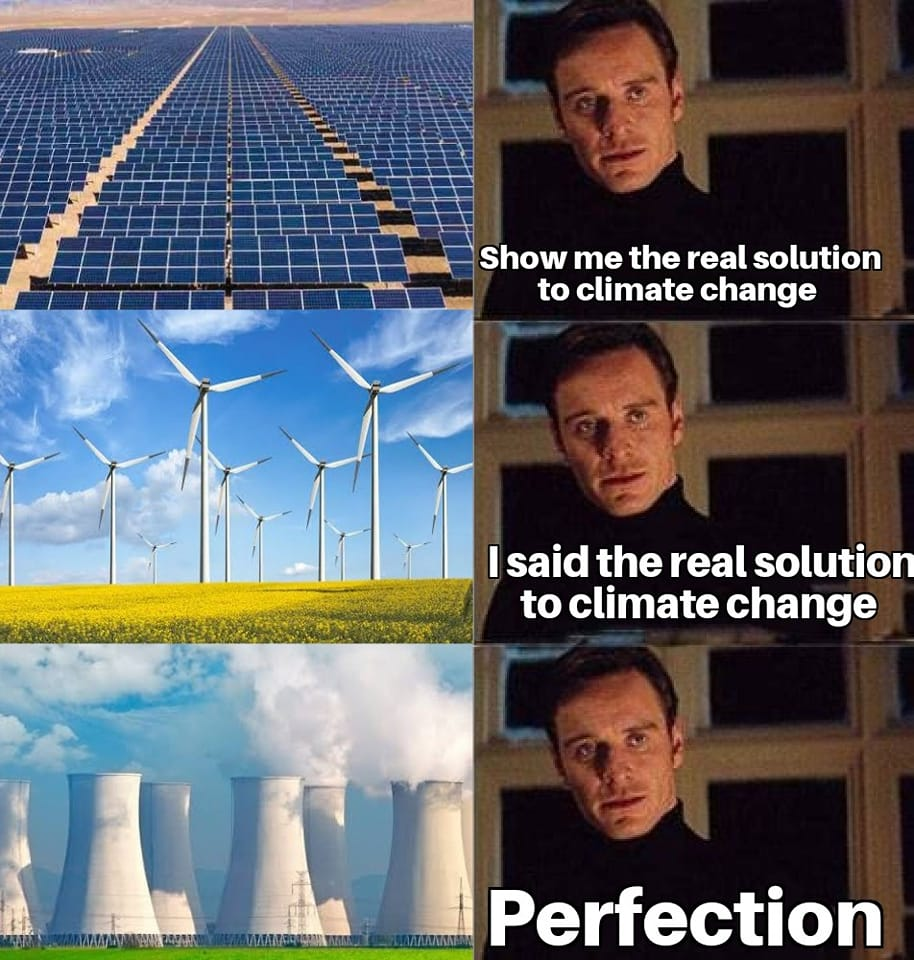

¿Por qué la energía nuclear es superior?
La energía nuclear es la fuente de generación eléctrica más potente, limpia y eficiente que existe. A diferencia de las energías renovables (eólica, solar, hidráulica), ofrece suministro constante, alta densidad energética y cero emisiones de CO₂ durante su operación. Mientras los parques eólicos y solares dependen del clima y ocupan kilómetros de terreno, un solo reactor nuclear puede alimentar una ciudad entera durante décadas.